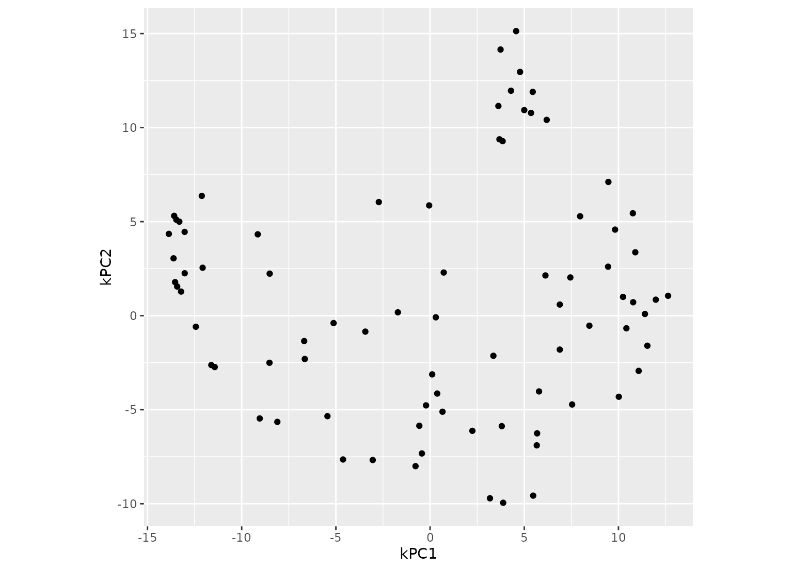

step_kpca_rbf a specification of a recipe step that
will convert numeric data into one or more principal components
using a radial basis function kernel basis expansion.
step_kpca_rbf( recipe, ..., role = "predictor", trained = FALSE, num_comp = 5, res = NULL, sigma = 0.2, prefix = "kPC", skip = FALSE, id = rand_id("kpca_rbf") ) # S3 method for step_kpca_rbf tidy(x, ...)
| recipe | A recipe object. The step will be added to the sequence of operations for this recipe. |
|---|---|
| ... | One or more selector functions to choose which
variables will be used to compute the components. See
|
| role | For model terms created by this step, what analysis role should they be assigned?. By default, the function assumes that the new principal component columns created by the original variables will be used as predictors in a model. |
| trained | A logical to indicate if the quantities for preprocessing have been estimated. |
| num_comp | The number of PCA components to retain as new
predictors. If |
| res | An S4 |
| sigma | A numeric value for the radial basis function parameter. |
| prefix | A character string that will be the prefix to the resulting new variables. See notes below. |
| skip | A logical. Should the step be skipped when the
recipe is baked by |
| id | A character string that is unique to this step to identify it. |
| x | A |
An updated version of recipe with the new step
added to the sequence of existing steps (if any). For the
tidy method, a tibble with columns terms (the
selectors or variables selected).
Kernel principal component analysis (kPCA) is an extension a PCA analysis that conducts the calculations in a broader dimensionality defined by a kernel function. For example, if a quadratic kernel function were used, each variable would be represented by its original values as well as its square. This nonlinear mapping is used during the PCA analysis and can potentially help find better representations of the original data.
This step requires the dimRed and kernlab packages. If not installed, the step will stop with a note about installing these packages.
As with ordinary PCA, it is important to standardized the
variables prior to running PCA (step_center and
step_scale can be used for this purpose).
The argument num_comp controls the number of components that
will be retained (the original variables that are used to derive
the components are removed from the data). The new components
will have names that begin with prefix and a sequence of
numbers. The variable names are padded with zeros. For example,
if num_comp < 10, their names will be kPC1 -
kPC9. If num_comp = 101, the names would be
kPC001 - kPC101.
Scholkopf, B., Smola, A., and Muller, K. (1997). Kernel principal component analysis. Lecture Notes in Computer Science, 1327, 583-588.
Karatzoglou, K., Smola, A., Hornik, K., and Zeileis, A. (2004). kernlab - An S4 package for kernel methods in R. Journal of Statistical Software, 11(1), 1-20.
data(biomass) biomass_tr <- biomass[biomass$dataset == "Training",] biomass_te <- biomass[biomass$dataset == "Testing",] rec <- recipe(HHV ~ carbon + hydrogen + oxygen + nitrogen + sulfur, data = biomass_tr) kpca_trans <- rec %>% step_YeoJohnson(all_predictors()) %>% step_normalize(all_predictors()) %>% step_kpca_rbf(all_predictors()) if (require(dimRed) & require(kernlab)) { kpca_estimates <- prep(kpca_trans, training = biomass_tr) kpca_te <- bake(kpca_estimates, biomass_te) rng <- extendrange(c(kpca_te$kPC1, kpca_te$kPC2)) plot(kpca_te$kPC1, kpca_te$kPC2, xlim = rng, ylim = rng) tidy(kpca_trans, number = 3) tidy(kpca_estimates, number = 3) }#>#>#>#> # A tibble: 5 x 2 #> terms id #> <chr> <chr> #> 1 carbon kpca_rbf_68zye #> 2 hydrogen kpca_rbf_68zye #> 3 oxygen kpca_rbf_68zye #> 4 nitrogen kpca_rbf_68zye #> 5 sulfur kpca_rbf_68zye